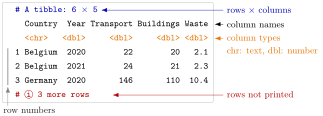

Tibble¶
Definition¶
The tidyverse is a collection of R packages for data analysis that share one design: dplyr (manipulating tables), tidyr (reshaping), readr (reading files), tibble (tables) and ggplot2 (plots), among others. library(tidyverse) attaches all of its core packages at once.
A tibble is the tidyverse version of a data frame: a table whose columns are named vectors of equal length, one type per column. It is created with tibble(), converted from a data frame with as_tibble(), or returned directly by readr's read_csv(). A tibble is still a data frame, so base R functions such as nrow(), ncol(), dim() and str() work on it unchanged.
Interpretation¶
A tibble is a data frame with better manners. It holds the same rows and columns, but it prints only what fits on the screen, states the size of the table and the type of every column, and refuses to guess when you ask for something that is not there.

The figure labels the parts of a printed tibble, using the small table of Example 1 printed with n = 3. The first line gives the size, 6 rows × 5 columns. Under the column names, <chr> and <dbl> say that Country is character and the other columns are double (numeric). The last line reports the 3 rows that were left out. A base R data frame prints all its rows and no types.
The size line and the type row are what make a tibble easy to check: after every step of an analysis you can see at once whether the number of rows and the column types are what you expected. A column that should be numeric but shows <chr> usually means that a text value such as "n/a" was read from a comma-separated values (CSV) file, a case of type coercion.
Loading the tidyverse also changes which function a name refers to. Both the stats package and dplyr have a filter(); the package attached later wins, so after library(tidyverse) the name filter means dplyr::filter(). The start-up message lists such name clashes under "Conflicts". Writing package::function() always calls the version you name, even without library().
A common surprise is subsetting. In a base R data frame df[, "Year"] returns a vector, but in a tibble it returns a one-column tibble. Use df$Year or df[["Year"]] (double brackets) when you need the vector itself.
Key Results¶
library(tidyverse)attaches dplyr, tidyr, readr, tibble, ggplot2 and the other core packages; it must be run again in every new R session, whileinstall.packages("tidyverse")is needed only once.as_tibble(df)converts a data frame to a tibble;tibble(x = …, y = …)builds one column by column;read_csv()reads a file straight into a tibble.- A printed tibble shows its size (
# A tibble: 6 × 5), the type of each column (<chr>,<dbl>,<int>,<lgl>), at most 10 rows of a long table and only the columns that fit the console width. nrow(),ncol(),dim(),str()and$work exactly as for data frames.- Single-bracket column selection keeps the result a tibble;
$and[[return the column as a vector, and$with a misspelt name gives a warning andNULLinstead of a partial match. dplyr::filter()selects that package's version of a function explicitly; without the prefix, the most recently attached package decides.
Examples¶
1. Building and printing a tibble. The table below is a small made-up extract in the shape of a carbon dioxide (CO2) emissions data set: one row per country and year, one column per emission sector.
library(tidyverse)
co2 <- tibble(
Country = c("Belgium", "Belgium", "Germany", "Germany", "Netherlands", "Netherlands"),
Year = c(2020, 2021, 2020, 2021, 2020, 2021),
Transport = c(22, 24, 146, 148, 30, 31),
Buildings = c(20, 21, 110, 115, 25, 24),
Waste = c(2.1, 2.3, 10.4, 9.8, 4.2, NA)
)
print(co2, n = 3)
#> # A tibble: 6 × 5
#> Country Year Transport Buildings Waste
#> <chr> <dbl> <dbl> <dbl> <dbl>
#> 1 Belgium 2020 22 20 2.1
#> 2 Belgium 2021 24 21 2.3
#> 3 Germany 2020 146 110 10.4
#> # ℹ 3 more rows
Without n = 3 all six rows are printed, because a tibble shows every row of a short table (up to 20) and the first 10 of a longer one.
2. Base R functions still work. Converting a data frame with as_tibble() changes the printing, not the content.
df <- data.frame(x = 1:3, y = c("a", "b", "c"))
tb <- as_tibble(df)
dim(tb)
#> [1] 3 2
class(tb)
#> [1] "tbl_df" "tbl" "data.frame"
mean(tb$x)
#> [1] 2
The class vector ends in "data.frame": every function written for data frames accepts a tibble.
3. Pitfall: single brackets and misspelt names. With the tibble co2 of Example 1:
co2[, "Year"]
#> # A tibble: 6 × 1
#> Year
#> <dbl>
#> 1 2020
#> 2 2021
#> 3 2020
#> 4 2021
#> 5 2020
#> 6 2021
co2[["Year"]]
#> [1] 2020 2021 2020 2021 2020 2021
co2$Yea
#> NULL
#> Warning message:
#> Unknown or uninitialised column: `Yea`.
mean(co2[, "Year"]) would therefore not give a number, because mean() needs a vector. A base R data frame would also have matched $Yea to Year without a warning; the tibble refuses to guess.
4. Which filter()? The name filter exists in two packages. Before the tidyverse is attached it means the time-series filter of the stats package; afterwards it means the dplyr function that keeps rows.
dplyr::filter(co2, Year == 2021, Transport > 30)
#> # A tibble: 2 × 5
#> Country Year Transport Buildings Waste
#> <chr> <dbl> <dbl> <dbl> <dbl>
#> 1 Germany 2021 148 115 9.8
#> 2 Netherlands 2021 31 24 NA
The prefix dplyr:: makes the call unambiguous and works even in a session where the package was never attached with library().
Prerequisites¶
Related Concepts¶
- Pipe Operator
- Core dplyr Verbs
- Atomic Vector
- Single and Double Brackets
- ggplot2 and the Grammar of Graphics
Sources¶
- Programming for EOR · Week 4
- Lecture 4 script, Data Wrangling with the tidyverse & Visualisation with ggplot2: Getting Started with the tidyverse; Tibbles
Aliases: tibbles, tbl_df, tibble(), as_tibble(), as_tibble, tidyverse, library(tidyverse), read_csv(), tidyverse data frame Keywords: tidyverse, as_tibble(), compact printing, column types
Last updated: 10 November 2026 16:43
TibbleCore dplyr Verbsggplot2 and the Grammar of GraphicsPipe OperatorRelational JoinsPivoting Between Wide and Long DataData FramePackagesReading and Writing CSV FilesAtomic VectorSingle and Double Brackets